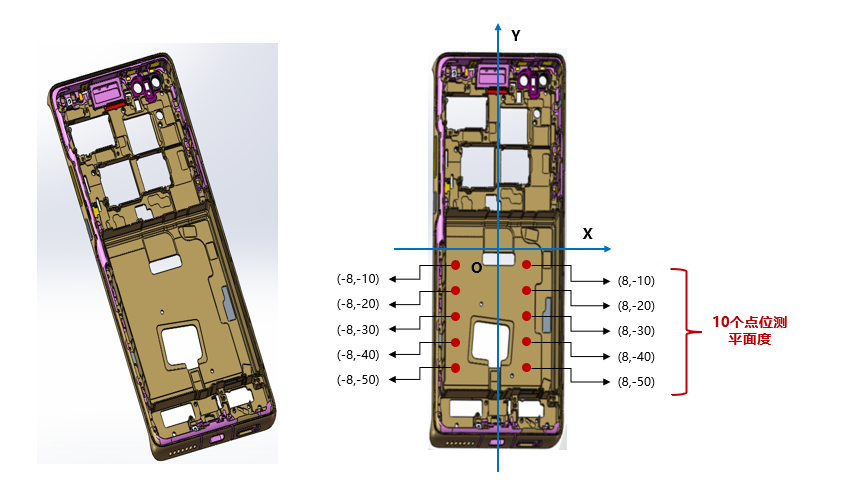
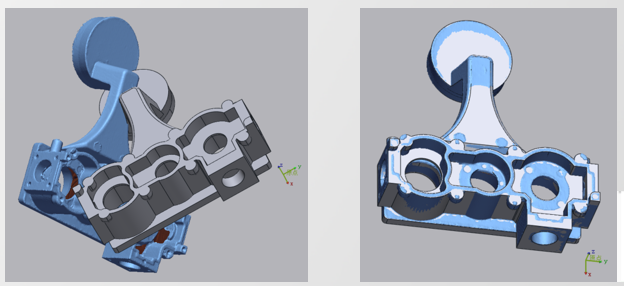
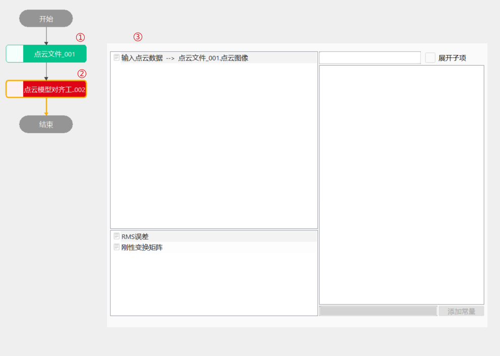
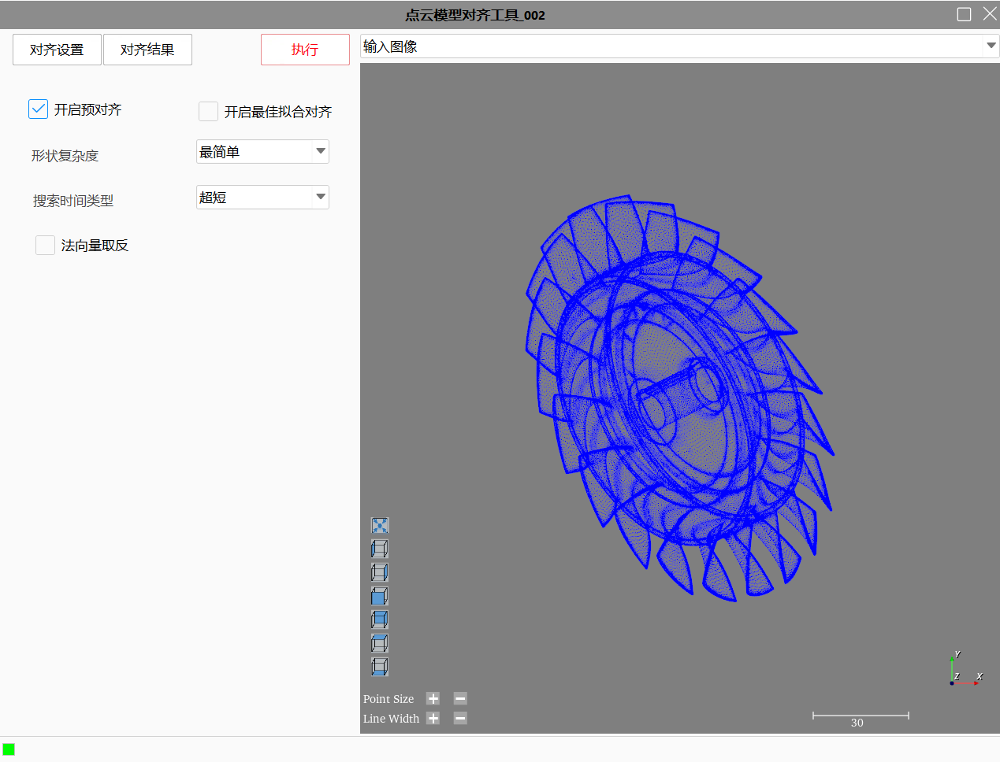
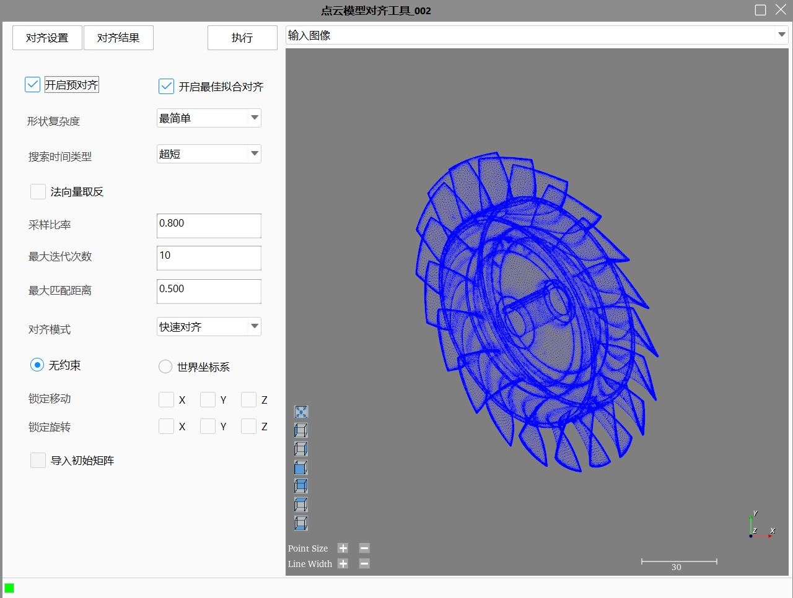
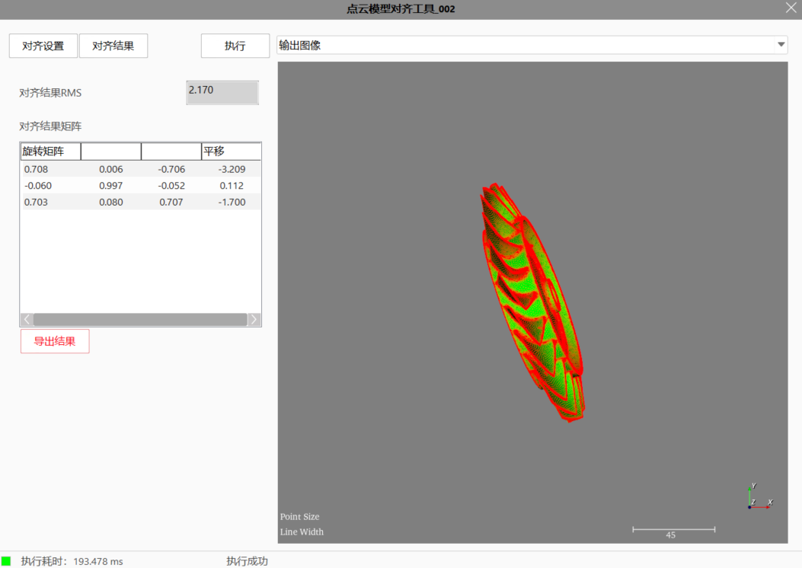

点云模型对齐工具基于CAD模型（stl格式）和点云数据中几何特征完成快速对齐，建立基准坐标系，以协助后续3D测量和检测任务。
典型的应用场景如：手机零部件尺寸规格检测、产品曲面轮廓度检测。在基准坐标系下对工件进行尺寸规格质量检测，完成3D测量和检测任务。





1、预对齐设置流程：载入模型→训练模型→执行匹配。
（1）点击“载入模型”：会弹出打开文件窗口，选择本地STL文件；
（2）点击“训练模型”：进行训练；
（3）根据设定的参数返回相应的匹配结果。
2、最佳拟合对齐设置流程：载入模型→设置参数→执行匹配。
（1）点击“载入模型”：会弹出打开文件窗口，选择本地STL文件；
（2）设置参数：设置工具参数、约束和初始矩阵；
（3）根据设定的参数返回相应的匹配结果。
执行成功后可以导出对齐结果矩阵到本地，对齐结果如图3_4所示。

| 参数名称 | 参数描述 |
|---|---|
| 输入点云数据 | 输入待模型对齐的点云图像 |
| 参数名称 | 参数描述 |
|---|---|
| 模型文件路径 | 加载模型文件路径 |
| 开启预对齐 | 是否开启预对齐功能 |
高级界面参数与属性窗口参数一致。
| 参数名称 | 参数描述 |
|---|---|
| RMS误差 | 模型对齐执行后的匹配误差 |
| 刚性变换矩阵 | 模型对齐执行的旋转平移矩阵结果 |
| 输出点云数据 | 供其他工具输入使用的点云数据 |
| 参数名称 | 参数描述 |
|---|---|
| RMS误差 | 模型对齐执行后的匹配误差 |
| 刚性变换矩阵 | 模型对齐执行的旋转平移矩阵结果 |
| 输出点云数据 | 模型对齐后输出的点云数据 |
| 执行结果 | 工具执行结果 |
| 执行时间 | 工具执行时间 |
参见“\Samples\3D\点云\点云模型对齐工具.gvp”。
a、 形状复杂度：用于指定模型训练的精细程度，分为：最简单（默认值）、简单、一般、复杂、最复杂。一般情况下，最简单和简单适用于模型形状结构分明的场景，一般可适用于扁平狭长的模型，复杂和最复杂可针对旋转对称的模型；
b、 搜索时间：目标匹配过程中，用于指定对齐大致计算可持续的时间，分为：超短（默认值）、短、普通、长、超长。一般情况下，超短和短适用于一般的结构分明的零部件，普通可适用于平坦特征的目标，长和超长可针对旋转对称的物体；
c、 点云法向量是否取反：指定是否修正目标点云法线的方向，若启用时，目标匹配过程中其法线方向会反向，默认不启用该参数；
d、 是否执行最佳拟合对齐：目标快速匹配后，可设置是否执行一次最佳拟合对齐以提高匹配精度，默认启用该参数；
e、约束条件：约束条件是指对齐过程中各自由度的约束，若锁定x轴旋转，则对齐过程中不考虑x旋转变换。